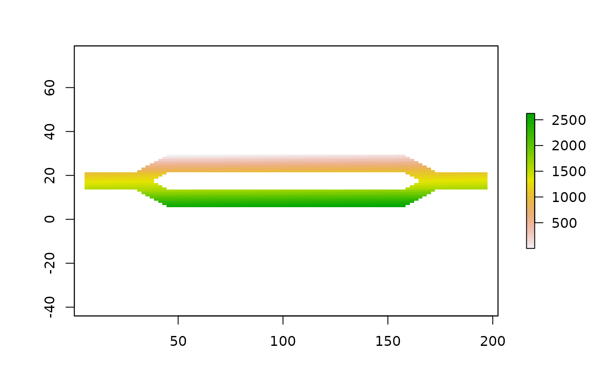

Get cell numbers from raster data
locate(samc, xy)
# S4 method for samc,missing
locate(samc)
# S4 method for samc,ANY
locate(samc, xy)A samc-class object
Any valid input to the y argument of the extract function in the raster package.
A RasterLayer or a vector
This function is used to get cell numbers from raster data. The numbers used for origin and destination values in many samc metrics refer to column/row numbers of the P matrix. For a P matrix derived from raster data, these numbers would normally line up with the cell numbers of the raster, but this is not always true. This is the case when the raster contains NA data; the cells associated with this data are excluded from the P matrix. This causes issues trying to determine the cell numbers that should be used in analyses.
The locate function operates more-or-less like the
cellFromXY function in the raster package, but unlike
cellFromXY, locate properly accounts for NA cells
in identifying cell numbers from coordinate data.
This function can also be used if the samc object was created from matrix inputs for the resistance, absorption, and fidelity parameters. In this case, the values in the xy coordinate parameter can be column-row values with the caveat that (1,1) is the bottom left corner.
The xy parameter can also be excluded. In this case, the function returns a raster where the values of the cells contains the cell number.
Internally, this function relies on the extract function
from the raster package, and any valid input for the y argument of that function
is valid here.
library(samc)
library(raster)
#> Loading required package: sp
# Load example data
res_data <- samc::ex_res_data
abs_data <- samc::ex_abs_data
occ_data <- samc::ex_occ_data
# Create samc-class object
samc_obj <- samc(res_data, abs_data,
tr_args = list(fun = function(x) 1/mean(x), dir = 8, sym = TRUE))
# We can use locate() to return a raster with the cell numbers encoded as data
# in the cells
cell_raster <- locate(samc_obj)
plot(cell_raster)

# We can use a variety of spatial inputs to get cell numbers using locate()
# The simplest is a two-column data.frame
coords <- data.frame(x = c(50, 79, 22),
y = c(25, 11, 19))
print(coords)
#> x y
#> 1 50 25
#> 2 79 11
#> 3 22 19
locate(samc_obj, coords)
#> [1] 494 1925 1193
# You will get an error if you input a coordinate that does not correspond
# to a non-NA cell
coords <- data.frame(x = c(1),
y = c(1))
print(coords)
#> x y
#> 1 1 1
try(locate(samc_obj, coords))
#> Error : One or more coordinates do not correspond to non-NA cells.